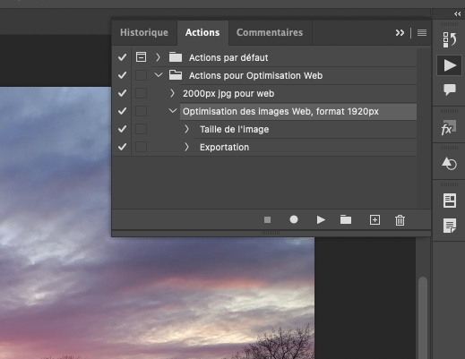
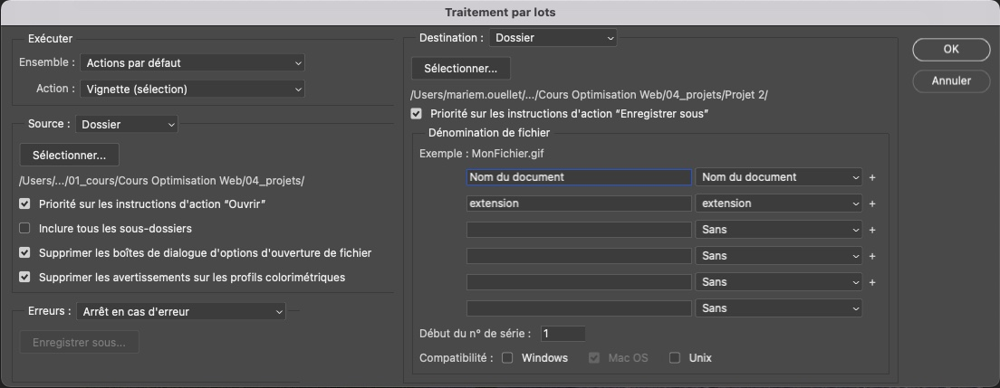

Lecture intéressante sur le sujet:
Cette page ne traite que ces images matricielles et non des images vectorielles pour le Web tel que le SVG. Si vous souhaitez optimiser vos SVG pour le Web, référez vous à cette page
JPG
Le terme JPEG (ou JPG) signifie Joint Photographic Experts Group et a été créé en 1986.
Principaux avantages des JPG
- Peut afficher des millions de couleurs
- Particulièrement bien adapté aux niveaux de compression élevés
- Souvent plus léger que d'autres formats, ils occupent moins d'espace et se chargent plus rapidement.
- Standardisés et pris en charge par la grande majorité des navigateurs Internet, des créateurs de sites et des appareils (c'est-à-dire que les gens seront presque toujours en mesure de voir ces images).
- Hautement convertible : transformer un JPEG en d'autres formats tel que les PNG.
En général, le format JPEG est une excellente option pour afficher des photographies complexes comportant beaucoup de couleurs et dégradés.
PNG
Les Portable Network Graphics (PNG) sont tout aussi populaires que les JPEG pour l'affichage sur les sites web. Ils prennent également en charge des millions de couleurs, bien qu'il soit préférable d'utiliser les PNG pour les images contenant moins de données de couleur. Sinon, votre image sera plus "lourde" que la même image enregistrée au format JPEG.
Principaux avantages des PNG
- Taille de fichier régulièrement inférieure à celle des JPEG pour les images peu colorées ou avec des couleurs à plat, telles que les captures d'écran d'interface par exemple.
- Prise en charge par la plupart des principaux navigateurs, créateurs de sites et appareils pour une visualisation universelle.
- La compression sans perte permet de conserver une meilleure qualité d'image que la norme de compression avec perte JPEG.
- Prise en charge de la transparence pour l'élimination des arrière-plans et l'utilisation dans les logos
- Possibilité de conversion au format PNG-24 pour les images de plus de 16 millions de couleurs (par opposition aux 256 couleurs des PNG ordinaires)/li>
- Aucune perte de qualité lors de l'enregistrement répété d'une image.
GIF
Contrairement aux deux formats dont nous avons parlé jusqu'à présent, les GIF (Graphics Interchange Format) ont des cas d'utilisation beaucoup plus spécifiques. Bien qu'il soit possible d'avoir une image GIF statique, la plupart des gens utilisent ce format pour présenter des animations. Les nombre de couleurs est réduit à 250 donc les dégradés sont parfois très compressés...
Principaux avantages des GIF
- Expliquer une idée ou une action complexe qui nécessite du mouvement
- Ils sont plus légers que les vidéos (et ne nécessitent pas que l'utilisateur appuie sur "Play")
- Ils se répètent à l'infini
WebP
WebP est un format d'image moderne qui offre une compression supérieure avec perte et sans perte pour les images du Web. WebP permet aux webmasters et aux développeurs Web de créer des images plus petites et plus riches qui rendent le Web plus rapide.
La taille des images WebP sans perte est 26% inférieure à celle des images PNG. Les images perdues WebP sont 25 à 34% plus petites que les images JPG comparables, avec un indice de qualité SSIM équivalent.
WebP sans perte prend en charge la transparence comme le format PNG mais contrairement à JPG.
Principaux avantages de WebP
- Sa compression avec perte permet généralement de réduire la taille des fichiers davantage que les formats PNG et JPEG.
- Il prend en charge les images animées, ce qui n'est pas possible avec les formats PNG et JPEG. Les images animées utilisant le format WebP sont généralement de meilleure résolution et plus faciles à compresser que les GIF.
- Il offre des possibilités de transparence, comme le PNG.
- Pris en charge par la plupart des principaux navigateurs (taux d'adoption d'environ 97 %, seuls les navigateurs très anciens n'étant pas pris en charge).
Testez d'abord avec une seule image
Vous pouvez d'abord tester l'optimisation d'une seule image pour vérifier comment optimiser les images prévues pour le même type d'affichage sur votre site.
Vous devez vérifier:
- Quel format maximum l'image sera-t-elle affichée sur le site?
Sachez qu'utiliser une image de 5000px alors qu'elle ne s'affiche que sur une largeur maximum de 1920px nous forcera les utilisateurs de votre site à charger des images d'une taille trop grande et trop lourde pour le réel besoin. Il faut réduire la taille de vos images! - Quel format de compression Web sera le plus optimal pour mon image?
On peut faire le test ou se fier aux avantages de chaque type format d'image Web énumérés ci-haut dans la page.
Créez l'action Photoshop
Ouvrez une image du lot à optimiser pour faire la première démo de votre Action Photoshop.
Dans le menu Photoshop, allez dans Fenêtre et Actions (alt+f9).
Dans le fenêtre Actions, créer un dossier pour classer vos actions personnalisées. Nommez-le comme vous le souhaitez.
Sélectionner ce petit dossier et dans le bas de la fenêtre action, cliquez le le petit + (Créer un action). Nommez avec un nom que vous reconnaitrez pour la suite, exemple "Optimisation des images pour site web, format 1920px"
Dès lors, toutes action que vous allez faire sur l'image sera enregistrée tant que vous n'apuierez pas sur le petit Stop 🔳 dans la fenêtre Actions.
- Menu Images>Taille de l'image et inscrivez la largeur maximum d'affichage prévue de vos images du lot, exemple 1920px. Assurez vous que conserver le ratio (la hauteur devrait s'ajuster automatiquement sans modifier le ratio de l'image). Cliquez ok.
- Pour enregistrer pour le Web (legacy), faites le racourci clavier suivant: Ctrl+Alt+Maj+S (ou sur Mac: CMD+Option+Maj+S).
- Dans la fenêtre contextuelle, choisissez le format (JPG, PNG GIF), ainsi que la qualité de couleur, le niveau de compression (qualité) et choisir ou non d'ajouter de la transparence. Vous pouvez comparer visuellement la version original et la version compressée ainsi que leur poids et faire un choix éclairé sur vos paramètre de compression. Cliquez ensuite sur Enregistrer et sauvegardez la ailleurs, dans un autre dossier (pour conserver l'originale).
- Finalement revenez dans la fenêtre Actions et cliquez sur Stop 🔳
Vous avez maintenant une Action prête à être utilisée sur un lot d'image. Vous pouvez créer le nombre d'Actions que vous souhaitez, vous pourriez en faire une différente pour des images dont la largeur maximale d'affichaque sur votre site serait de 400px par exemple.
Pour appliquer l'action sur un lot d'images.
Menu Fichier>Automatisation>Traitement par lots
Dans la fenêtre contextuelle
- Sélectionner un dossier "Source" contenant les images à traiter
- Cocher "Priorité sur les instructions d'action ouvrir", "Supprimer les boîtes de dialogue d'ioption d'ouverture de fichier" et "Supprimer les avertissements sur les profils colorimétiques"
- Sélectionner un dossier de "Destination" où enregistrer les images traitées
- Cliquez sur ok, et voilà! Tout se fait presque tout seul, vous avez maintenant vos images compressées et optimisées.